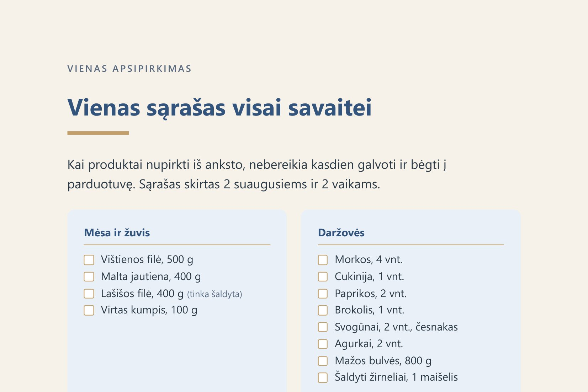
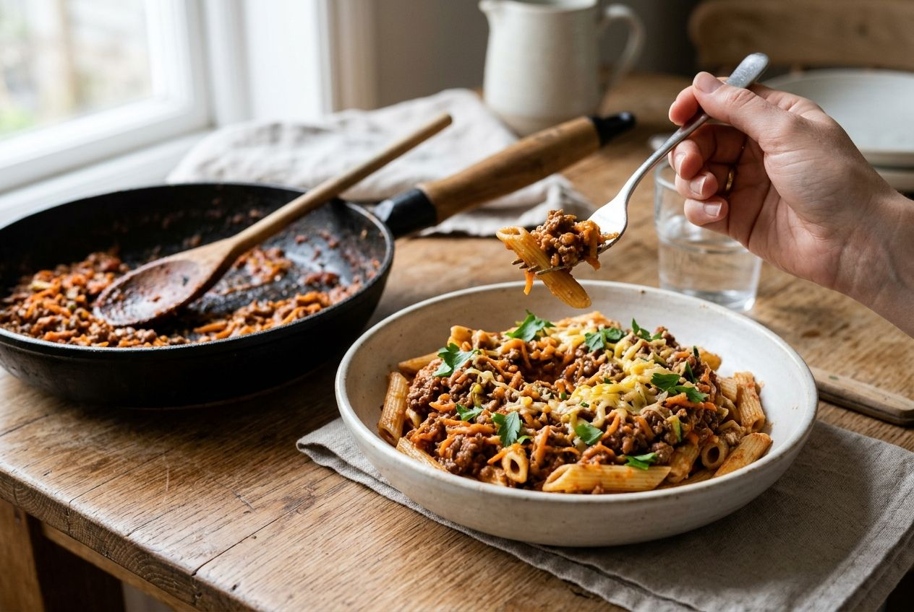
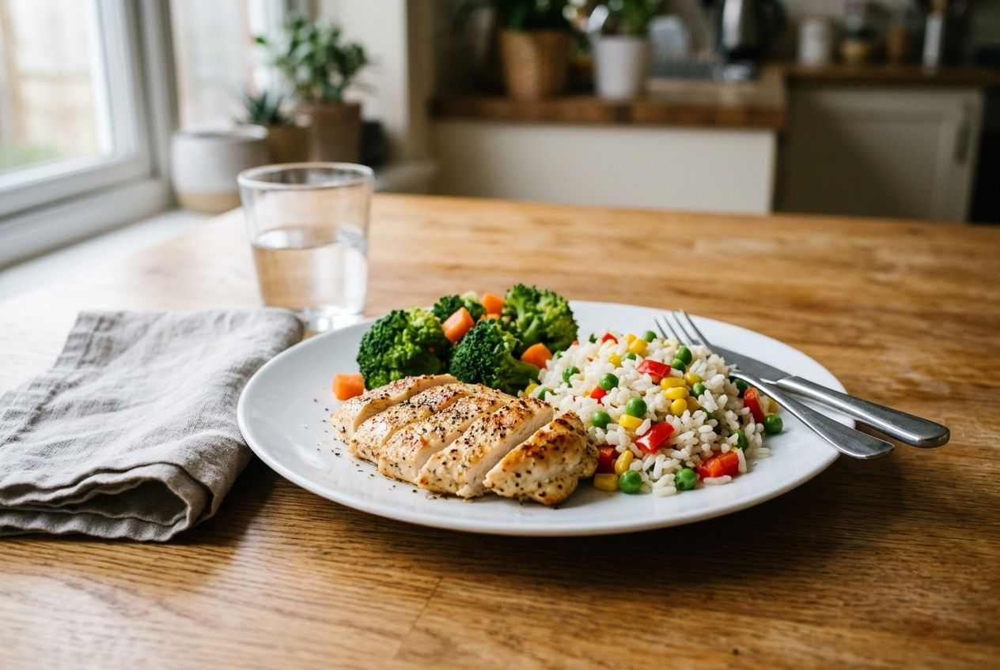

5 vakarienės užimtai mamai
Ryte 5 minutės, vakare 20. Penkios mano vakarienės su vienu pirkinių sąrašu iš Netto, Rema ir Lidl, dovanų.
Ryte 5 minutės, vakare 20
-
Vienas apsipirkimas savaitei
Viename sąraše viskas penkioms vakarienėms 2 suaugusiems ir 2 vaikams. Nufotografuoji jį telefonu ir eini į Netto, Rema ar Lidl.

-
Ryte paruoši per 5 minutes
Išverdi ryžius, supjaustai vištieną ar daržoves ir sudedi į dėžutę. Kai atvės, įdedi į šaldytuvą.
-
Vakare iškepi per 20 minučių
Grįžus lieka tik iškepti. Antradienį, kol verda makaronai, apkepi faršą su ryte paruoštomis daržovėmis.

5 vakarienės savaitei
Pirmas tris dienas pradedi ryte, ketvirtadienį viską atlieka orkaitė, o penktadienį suvalgai, kas liko šaldytuve.
- Vištiena su ryžiais ir daržovėmis
Pirmadienis. Ryte išverdi ryžius, vakare apkepi vištieną su morka ir žirneliais.
~20 min - Makaronai su mėsos padažu
Antradienis. Cukinija ištirpsta padaže, vaikai jos nemato.
~20 min - Tortilijų picos
Trečiadienis. Kiekvienas pasidaro savo picą pats.
~15 min - Lašiša ant vienos skardos
Ketvirtadienis. Viską atlieka orkaitė, 200 °C apie 15 min.
~20 min - Šaldytuvo išvalymo omletas
Penktadienis. Likusios daržovės, kiaušiniai ir feta.
~15 min
